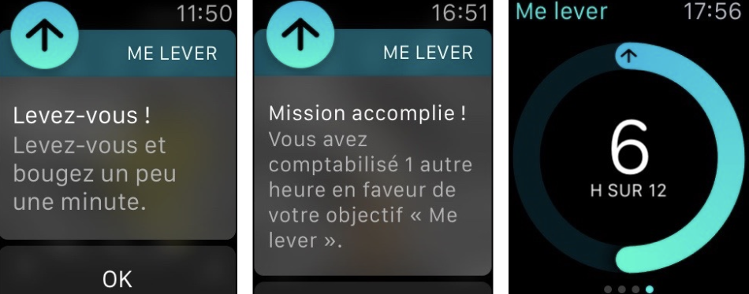
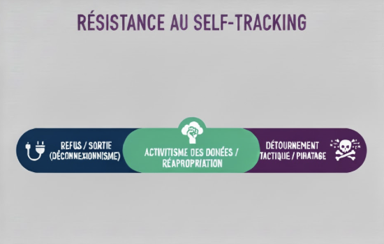

1) Le pas : norme, donnée et contrôle
Bienvenue dans notre étude consacrée à la quantification des pas par les objets connectés. Ce projet interroge la manière dont la donnée du pas, érigée en norme de santé par les algorithmes et les stratégies marketing, participe à la construction d’un système de self-tracking qui, sous couvert d’optimisation individuelle, contribue à la marchandisation du corps et au renforcement des mécanismes de contrôle social.

Depuis une dizaine d’années, la quantification des corps s’est imposée comme une pratique quotidienne pour une part croissante de la population. Déjà en 2019, 4 Français sur 10 déclaraient “utiliser des objets connectés ou des applications dans le cadre de leurs activités sportives” (Les Échos, 2023), signe d’un marché en pleine expansion. Du simple podomètre aux smartphones et montres connectées, l’offre s’est diversifiée et chaque dimension du corps devient mesurable, traçable et comparable. Ces dispositifs, définis en 2018 par le Journal officiel comme des “objets capables d’envoyer ou de recevoir des informations via un réseau” (Journal Officiel, 2018), occupent désormais le quotidien, de la santé à la prévention médicale et à l’entretien sportif.
Cette prolifération s’accompagne d’un discours puissant : “s’entraîner comme un pro”, optimiser sa forme, prévenir les risques, devenir acteur de sa santé. Le marché mondial des applications de santé, estimé à “12,4 milliards de dollars en 2018 et annoncé à plus de 200 milliards en 2026” (Aromatario, 2020), s’appuie sur ces promesses. Les institutions publiques elles-mêmes y voient un levier de transformation : amélioration de la qualité de vie, systèmes de santé plus efficients, autonomisation du patient, réduction des inégalités d’accès aux soins, etc.
Pourtant, cette dynamique soulève une tension centrale. En rendant visibles et quantifiables des pans entiers de nos activités, les technologies portables n’offrent pas seulement de nouvelles ressources pour “mieux vivre”, elles redéfinissent aussi ce que signifie être en bonne santé, actif et performant. Le suivi quotidien des pas, devenu une métrique emblématique, illustre cette ambivalence : instrument d’autonomisation pour certains, il peut aussi produire des normes implicites comme une auto-surveillance ou une nouvelle forme de gouvernement des comportements (Sunstein et Thaler, 2008).
C’est cette tension entre promesse d’émancipation et logique de normalisation que nous proposons d’explorer à travers l’analyse des données de pas issues de NHANES.
Notre étude s’appuie sur un jeu de données issu de NHANES (National Health and Nutrition Examination Survey), un programme mené par les Centers for Disease Control and Prevention (CDC) aux États-Unis depuis la fin des années 1950. NHANES a été créé pour évaluer l’état de santé et la nutrition de la population américaine. Ses objectifs sont doubles : fournir des indicateurs fiables pour orienter les politiques publiques de santé et mettre à disposition de la communauté scientifique des données standardisées et comparables pour la recherche.
Dans les cycles 2011‑2012 et 2013‑2014, NHANES a intégré la collecte d’accéléromètres portés par les participants, afin de mesurer leur activité physique de manière objective. La base Minute‑level Step Counts, disponible sur PhysioNet (Koffman et Muschelli, 2025), contient des comptages de pas au niveau minute obtenus à partir des données brutes d’accéléromètres ActiGraph GT3X+ portés au poignet pendant sept jours consécutifs. Ces données ont été traitées via cinq algorithmes open-source et un algorithme propriétaire (ActiLife), appliqués aux mêmes mesures brutes. Cette pluralité méthodologique permet d’étudier la variabilité des mesures selon les algorithmes et de questionner ce que signifie réellement “compter un pas”.
Plusieurs revues académiques ont déjà exploité ce jeu de données pour analyser la distribution des pas, leurs corrélations avec la santé et les implications méthodologiques des différents algorithmes. C’est sur la base de ces travaux scientifiques que nous avons construit notre recherche. Notre approche combine analyse quantitative des données NHANES et entretiens auprès d’usagers et de professionnels. Elle nous permet d’interroger la production des mesures, leur interprétation et leur inscription dans les pratiques sociales, éclairant ainsi les tensions entre contrôle de soi, normes de performance et formes implicites d’auto‑surveillance.
2) L’histoire et les acteurs de la quantification du corps
NHANES (National Health and Nutrition Examination Survey) est un programme américain mené par le CDC. Initialement conçu pour surveiller l’état de santé de la population, il utilise des accéléromètres pour quantifier l’activité physique.
Objectifs clés :
- Étudier les tendances épidémiologiques
- Informer les politiques publiques
- Produire des normes de santé

La quantification du corps n’a pas toujours été liée à la santé, au bien-être ou à l’optimisation personnelle. Son histoire révèle une transformation progressive du statut du corps : d’un simple instrument de mesure au service de l’espace, il devient peu à peu un objet d’observation médicale, puis un capital à optimiser dans une société marquée par la performance.
Aux origines, la quantification ne s'intéresse pas directement à l’individu : elle sert d’abord à mesurer le monde. L’odomètre inventé dans l’Antiquité ou le podomètre développé au XVIᵉ siècle étaient pensés pour géométriser le déplacement humain. Ingénieurs militaires, topographes ou scientifiques comme Jean Fernel cherchaient alors à standardiser le mouvement pour en faire une unité fiable. Le « pas d’un homme moyen » n’a rien à voir avec la santé : il sert uniquement à convertir la marche en distance mesurable. Le corps n’a alors pas d’identité propre : il n’est qu’un outil mécanique anonymisé.

Cette logique change au XIXᵉ siècle lorsque la médecine s’empare de ces instruments de mesure. Le podomètre devient un support de rationalisation du corps : les médecins et hygiénistes l’utilisent pour organiser et contrôler l’activité physique des patients. Pour la première fois, la mesure sert à discipliner et réguler le corps humain. Le pas n’est plus seulement une unité géométrique, mais un indicateur destiné à vérifier le respect des prescriptions médicales et des normes de santé.

La dernière transformation se produit dans nos sociétés contemporaines. Avec l’émergence du mouvement Quantified Self dans les années 1990, et la diffusion massive des objets connectés, chacun peut désormais mesurer son sommeil, ses pas, son rythme cardiaque, sa productivité ou son niveau de stress. Le corps devient un capital à gérer, améliorer et optimiser. L’individu adopte la posture d’un gestionnaire de soi, encouragé par une idéologie néolibérale qui présente le temps comme un actif et chaque action comme un investissement.
Cette auto-mesure s’appuie sur un mécanisme technologique précis : l’association entre capteurs et algorithmes. Les données permettent alors de produire un continuum entre le normal et le pathologique, transformant des états ordinaires en variables de risque ou en indicateurs d’efficacité. En parallèle, la dimension sociale de ces données joue un rôle central. Les plateformes où l’on partage ses performances favorisent la comparaison, la valorisation des efforts et l’installation d’une dynamique de compétition continue. Les mesures deviennent ainsi un moteur de motivation, de distinction et parfois de pression.

Au final, la quantification du corps s’inscrit désormais dans une culture où chaque instant peut être transformé en donnée exploitable et chaque comportement en objectif à optimiser. Du pas standardisé de l’ingénieur à la fréquence cardiaque analysée par une montre connectée, le rapport au corps s’est ainsi complexifié, toujours davantage lié à la maîtrise, au contrôle et à la performance individuelle.
3) Comment les pas sont comptés ? Technologies, algorithmes et biais
Les données brutes des accéléromètres sont transformées par 6 algorithmes différents (5 open-source, 1 propriétaire – ActiLife). Chacun produit des mesures légèrement différentes.
L’écosystème des technologies de comptage de pas, du podomètre mécanique du XVIIe siècle aux objets connectés de santé (montres, applications, capteurs) repose sur une infrastructure technique à la fois complexe et normative, qui façonne ce que signifie “marcher” et ce que représente un pas. Souvent invisible pour l’utilisateur, cette infrastructure est essentielle à la compréhension de la façon dont les données corporelles deviennent commercialisables.

Biais d’infrastructure :
- Calibration sur corps jeunes, valides, masculins
- Mesure dégradée avec âge, fatigue, handicap,
- invisibilisation des corps “non conformes”
En premier lieu, les capteurs (GPS, accéléromètre et gyroscope) produisent des mesures dont la précision dépend des conditions d’usage. Ils ne capturent pas la singularité de chaque corps, ce qui mène à une approximation fondée sur des seuils, des moyennes et des algorithmes d’interprétation. Comme l’explique une étude de 2020, les capteurs “produisent moins une mesure brute qu’une interprétation computationnelle du corps”. En ce sens, Aimé Muhoza rappelle que la conception de ces dispositifs privilégie les corps jeunes et en bonne santé : “la plupart des dispositifs disponibles sur le marché sont conçus pour des personnes en bonne santé ou des athlètes”. Les corps vieillissants, malades, en situation de handicap ou simplement atypiques se retrouvent invisibles dans cette architecture métrique.


- Exemple de publicité pour une montre connectée montrant explicitement un corps masculin et en bonne santé (Montre Connectée Homme Avec Armbands Magnétisés,1,43' )
Catégories statistiques :
- seuils binaires actif / sédentaire
- seuils d’intensité
- “sédentaire vs actif”
- production socio-statistique d’identités corporelles
4) Ce que les pas font aux individus : motivation, pression, identité
Les données du pas sont utilisées dans trois sphères :
- Science : épidémiologie et publications
- Industrie : apps, marketing, gamification et engagement, objectifs standardisés (10 000 pas)
Réalités performées : la donnée ne mesure pas le monde : elle le fabrique ; les corps deviennent conformes à ce que le système peut capter ; lien avec La théorie performative du chiffre
Enfin, les plateformes produisent une économie de l’attention autour de la marche elle-même : badges, séries de jours consécutifs, classements et notifications transforment les pas en contenus sociaux. Ces données biométriques, exige aucun degré d’intentionnalité pour être mesuré et entretient à la fois une motivation quotidienne, mais instaure aussi une logique de comparaison permanente et d’exposition de soi. Le nombre de pas peut être encourageant pour un utilisateur tout en étant décourageant pour un autre. L’accumulation de pas devient une performance visible, les chiffres deviennent nécessaires à la validation et transforme la manière dont les marcheurs se perçoivent eux-mêmes. Ces individus peuvent alors voir le partage de données comme un moyen de construire une identité “quantifiée” tandis que les plateformes capitalisent sur l’intensification de ces pratiques pour enrichir leurs modèles économiques.
La motivation :
Le suivi biométrique et le partage de données permettent de cultiver ou de maintenir un sentiment de connexion, ce qui peut être particulièrement précieux pour les personnes qui n’ont pas de partenaires d’entraînement ou de systèmes de soutien souvent « intégrés » dans les communautés sportives hors ligne.
Les communautés numériques peuvent être vécues comme des espaces significatifs de connexion interpersonnelle. Des extensions virtuelles de groupes existant hors ligne sont réunies ainsi que des groupes de rencontre virtuels sont formés.
Le fait d’être “suivi” par les autres utilisateurs est alors perçu comme un moteur de motivation.
La pression :
Ces données ont tout de même leur propre vie : elles peuvent interagir, informer, et agir sur des personnes qui n’ont pourtant joué aucun rôle dans leur création. Un autre utilisateur peut utiliser ces données comme base de comparaison qui a la capacité d’influencer la manière dont les utilisateurs perçoivent leur condition physique et engendrent de la pression sociale, de l’anxiété de performance.
De plus, les logiciels numériques d’auto-suivi entraine une « reconfiguratiion du sujet de la surveillance » dans la mesure où ils encouragent non seulement les utilisateurs à se surveiller eux-mêmes, mais aussi à « inviter d’autres à le faire » (Lupton 2012). Les performances sont alors disponibles aux yeux de tous.
Ces observations créent des obligations implicites, certains disent même ressentir une forme de compétition ou une pression à performer générant du stress expliquant les tentatives de justifier des données « incorrectes » et la mise en scène intentionnelle des activités.
Le besoin et le désir de publier régulièrement peut aussi être compris comme une manière de réaffirmer et de démontrer sa responsabilité personnelle en matière de santé, d’auto-amélioration pointant du doigt ceux qui ne le font pas (Bastien Soulé, sociologue du sport).
L’identification :

Les plateformes ne proposent pas seulement des outils de suivi, elles redéfinissent ce qu’est un temps bien utilisé. En effet, pour Nagy, Eschrich et Finn, “si les utilisateurs perçoivent idéalement ces technologies (...) ils invitent souvent d’autres personnes et organisations à gérer leur temps à leur place”. Ainsi, les plateformes de suivi de l’activité comme Apple Santé, Fitbit ou Withings, orchestrent et interprètent, hiérarchisent et prescrivent, en fonction des mesures captées, ce que doit être une activité physique “normale”. Dans le cas des pas, l’objectif standard de 10 000 pas, loin d’être un consensus scientifique, illustre la manière dont une norme arbitraire peut structurer les comportements. En intégrant cet objectif comme base dans leurs interfaces, les plateformes incitent les utilisateurs à ajuster leurs pratiques quotidiennes, à partir d’hypothèses scientifiques.

Cette optimisation temporelle se matérialise par des objectifs journaliers gamifiés qui orientent l’expérience quotidienne (anneaux Apple, Fitbit Sleep Score, Garmin Body Battery, ou encore des notifications prescriptives comme “vous êtes en retard sur vos objectifs aujourd’hui”). Ces dispositifs forment une “unité perceptive” (Ihde, la théorie de la technologie, 1979) qui redistribue ce qui compte dans la journée : il ne s’agit plus de se sentir bien, mais d’être quantitativement conforme. La visualisation joue ici un rôle décisif : les interfaces mettent en avant les éléments optimisables du corps (pas, fréquence cardiaque, VO2max) tout en invisibilisant le contexte (plaisir, fatigue émotionnelle, météo, contraintes personnelles), comme le montrent les analyses de Rettberg (2020).
Cette dynamique favorise une discipline temporelle internalisée comme l’explique un utilisateur : “je suis scrupuleusement ce que me dit de faire la montre, je préfère être motivé par elle que par un entraîneur en chair et en os”. Par ailleurs, les objectifs quotidiens transforment la continuité d’activité en exigence morale : rater un jour devient un échec, rompre la chaîne de “streak”, une faute à réparer. Ainsi, loin de libérer du temps, les technologies du quantified self instaurent un régime où le temps devient un espace d’intervention algorithmique. Le suivi des pas, pratique en apparence banale, s’inscrit dans un horizon normatif où les individus internalisent l’obligation d’optimiser leurs rythmes corporels, sous couvert d’une maîtrise illusoire.

Le nombre de pas transforme l’expérience corporelle en une abstraction standardisée. Il impose un corps implicite, jeune, performant, valide, conçu pour et par les plateformes. Cette métrique ignore les réalités invisibles de l’activité, qu’il s’agisse de douleurs, fatigue, pathologies, pratiques non marchables ou trajectoires de vie qui ne se prêtent pas à la quantification. En prescrivant un objectif unique, les plateformes régulent le quotidien, la santé devient performance, le vieillissement un échec, et les corps s’ajustent progressivement à ce que les capteurs savent mesurer. La donnée ne décrit pas le monde, elle le fabrique, conformément à ce que la “théorie performative du chiffre” met en évidence, un corps réduit à ce qui est mesurable.
Quotidien : self-tracking, auto-surveillance, intériorisation des normes
Les technologies de quantified self reconfigurent notre rapport au temps en le transformant en une source mesurable, prédictible et optimisable. Comme l’explique l’étude sur le “time hacking” (2020), les dispositifs numériques “offrent de nouvelles opportunités de réflexion et de gestion de la vie”, donnant aux utilisateurs l’impression d’un “gain d’organisation et d’efficacité” et introduisant le concept de “manipulation du temps” pour décrire la manière dont ces outils influencent les perceptions temporelles. Cette impression repose sur la croyance en la neutralité technique, alors que les dispositifs façonnent en réalité “l’attention et la manière d’interpréter l’information”. Fiore-Gartland & Neff (2015) soulignent que les technologies de quantified self créent “l’illusion d’un contrôle total”. Les individus “utilisent les technologies de gestion du temps (traqueurs d’activité, montres connectées) pour exercer un meilleur contrôle sur leur passé, leur présent et leur avenir”. Cette dynamique s’inscrit dans une conception occidentale du temps comme ressource rare : “l’individu se doit de manipuler et d’allouer son temps de manière optimale pour être performant” (Mazmanian et al., 2015).
Entretiens :
Véronique (55 ans, usagère d’une Apple Watch) : culpabilisation, effet âge, intériorisation de la norme “si je baisse l’objectif, j’ai l’impression de tricher””
Nathalie Paquet (CEO, Sporty Peppers) : justification business, monétisation, biais conscients
Jules Bustin (23 ans, usager d’une montre) : notion de performance et compétition
5) Ce que la donnée ne montre pas : biais, opacité et économie de la donnée
- Biais méthodologiques : incohérences entre algorithmes, opacité des méthodes propriétaires
- Biais corporels : âge, genre, handicap, morphologie
Véronique, 55 ans, exprime le sentiment que les systèmes actuels (méthodes de mesure, outils numériques, etc.) ne parviennent pas à reconnaître son identité corporelle et son état actuel, engendrant une pathologisation de son vieillissement. Elle perçoit cette non-reconnaissance comme une forme de "punition" ou de violence normative, soulignant que ces systèmes semblent mal adaptés aux corps "divergents" ou simplement plus âgés, qui ne correspondent plus aux normes jeunesse et standardisées.
Effets sociaux :
- culpabilisation des individus, individualisation de la santé, responsabilité néolibérale, individualisation du risque
Effets économiques :
- captation de valeur par plateformes, priorisation des jeunes actifs, datafication du comportement
Nathalie, PDG de Sporty Peppers, déplore que les efforts physiques intenses soient souvent sous-évalués ou ignorés par les outils numériques, ce qui constitue une forme de violence normative liée à l'âge ou à l'effort. Elle affirme par ailleurs que le corps est perçu comme un "actif" qui, en bougeant via Sporty Peppers, génère de la valeur non pas pour l'utilisateur, mais pour "l'écosystème de la donnée" environnant, illustrant la monétisation du corps.
Une fois produites, les données de pas sont immédiatement intégrées dans des infrastructures privées (serveurs cloud, API, centres de données) qui orchestrent leur circulation. Celle-ci, souvent opaque pour l’utilisateur, repose sur des conditions d’utilisation qui autorisent fréquemment l’exploitation des données pour l’amélioration des services, la recherche ou, plus indirectement, la publicité et le développement de nouveaux produits connectés. Pour van Dijck, “les données deviennent un capital commercialisable, selon une logique typique de capitalisme de plateforme” : elles circulent dans des écosystèmes fermés où l'interopérabilité reste restreinte. Ainsi, “les données personnelles sont souvent plus utiles et lucratives pour les créateurs de ces technologies que pour les utilisateurs finaux, car ils peuvent les revendre à d’autres entreprises”.
Dans ce contexte, la question de la gouvernance est centrale. Fallery (2021), à propos du Health Data Hub, souligne les limites d’une éthique de la donnée fondée sur la transparence, tant l’infrastructure est complexe, distribuée et asymétrique. L’OCDE rappelle par ailleurs que “les données de santé (...) doivent être gérées avec discernement”. Pourtant, malgré le RGPD, l’utilisateur demeure pris dans un environnement technique où le consentement est limité par l’opacité structurelle des systèmes. Comme l’explique Arruabarrena (2016) “les dispositifs de quantified self instaurent une délégation de pouvoir au dispositif : mesure implique déjà d’accepter une forme d’encadrement algorithmique”.
Âge, genre et inégalités dans le self-tracking
Le rapport des personnes âgées aux technologies de self-tracking révèle également une dimension de gamification du vieillissement. Les personnes âgées sont, en général, moins à l’aise avec les technologies, y compris les montres de fitness. Pourtant, l’usage de ces dispositifs peut réduire leur incertitude par rapport à l’état de leur santé et elles éprouvent souvent un sentiment de joie plus marqué que d’autres groupes d’âge quand elles se sentent autonomes dans leur utilisation. Cependant, si l'appareil est perçu comme intrusif, trop contraignant ou difficile à gérer, les utilisateurs âgés perdent rapidement ce sentiment d'autonomie, ce qui réduit leur motivation et leur plaisir. Dans le cas des technologies de comptage de pas, une sous-estimation apparaît pour les utilisateurs plus âgés (65-84 ans), et encore davantage chez les utilisateurs de moyenne âge (40-64 ans). Cela suggère que les changements de démarche liés à l'âge influencent la précision des appareils de comptage de pas, ce qui pourrait indiquer que ces appareils sont conçus pour correspondre avant tout aux corps plus jeunes.
Les normes corporelles promues diffèrent selon le genre. Le nombre de pas utilisé dans les plateformes de self-tracking fonctionne donc comme une technologie de soi, imposant une vision néolibérale du corps et des performances, où la comparaison sociale et la visibilité des données façonnent la norme corporelle. Les femmes sont particulièrement touchées par cette idéalisation du corps (Boldi et al., 2024).
Certaines catégories populaires ne pratiquent pas le self-tracking, invoquant une fracture numérique, un désaccord avec l’engagement constant que requièrent ces outils, un désir de liberté vis-à-vis des contraintes quotidiennes. Cependant, pour d’autres, le suivi du nombre de pas peut constituer un vecteur d’émancipation et de motivation.
6) De la mesure à la norme : corps idéalisés, performativité et gouvernementalité
- Anxiété et dépendance : l’auto-mesure crée inquiétude, perte d’autonomie, méfiance envers les sensations.
- Autorité algorithmique : diagnostics, classements, normes présentés comme vérités objectives.
- Auto-surveillance : optimisation permanente, “entrepreneur de soi”, gouvernance biopolitique du quotidien.
- Inégalités renforcées : âge, genre, classe sociale ; corps visibles vs corps marginalisés.
Algorithmes normatifs et anxiété mesurée
Le nombre de pas est devenu bien plus qu’une simple donnée : il s’agit d’une technologie de soi (Foucault, 1975) qui concrétise les récits néolibéraux du corps comme un projet jamais achevé. Les plateformes de self-tracking utilisent le nombre de pas et participent à la création de normes corporelles standardisées, en classifiant les utilisateurs via des algorithmes composés de biais liés au genre, à l’âge ou à la morphologie (Rohlinger, The Sociology of Self-Tracking and Embodied Technologies).
Les profils jeunes, masculins et performants sont souvent mis en avant, tandis que d’autres restent invisibles.
Les classements et recommandations générés par ces plateformes renforcent ces logiques de sélection (Festic, Latzer & Smirnova, 2021). Même le type d’activité influence la visibilité ; la marche, la course à pied ou le triathlon sont valorisés, tandis que des sports moins quantifiables, comme le ping-pong ou la danse, restent marginalisés.
Des études ont montré les effets pervers de l’auto-mesure intensive chez les utilisateurs de montres connectées. Celle-ci tend à générer à la fois une anxiété liée au suivi en temps réel des indicateurs corporels et une dépendance au suivi, qui pousse les individus à hésiter à agir sans consulter leurs données. Les auteurs soulignent ainsi que les dispositifs censés renforcer la connaissance de soi peuvent paradoxalement instaurer un régime d’inquiétude et d’absence d'autonomie, affaiblissant la confiance dans les sensations corporelles au profit de métriques algorithmiques.
Le pouvoir de l’algorithme s’inscrit dans la capacité d’outils numériques opaques à produire des diagnostics, des recommandations et des classements qui s’imposent aux utilisateurs comme des vérités objectives.
L’auto-surveillance
L’auto-surveillance et l’auto-discipline qui sont créées par ces outils rappellent la notion foucaldienne d’ « entrepreneur de soi ». Dans cette approche, l’individu se gouverne lui-même, comme s’il gérait une entreprise, ce qui l’incite à être plus contrôleur et efficace dans tous les aspects de sa vie, rendant l’individu plus « hautement gouvernable ». Les utilisateurs de ces outils peuvent être incités au « Self-optimization » (ou auto-optimisation), dans le but d’être la meilleure version de soi-même.
Cette externalisation du savoir corporel opère un déplacement épistémologique fondamental. La connaissance « valide » du corps n'est plus ancrée dans la sensation intérieure (la fatigue, le bien-être), jugée subjective et faillible, mais dans la métrique algorithmique, promue comme objective et scientifique. Cette autorité épistémique de la « boîte noire » rend l'utilisateur incapable de contester les critères d'interprétation de ses propres données. Par ailleurs, le suivi permanent constitue une forme de biopolitique micro-temporelle. En fragmentant le flux continu de la vie en unités discrètes et optimisables (pas, calories, phases de sommeil), et en intervenant par notifications et récompenses en temps réel, l'algorithme colonise la perception du temps et l'agentivité immédiate de l'individu, gouvernant non plus la population mais la potentialité biologique de l'instant.
Une moralisation de la santé
Ce basculement marque un changement de paradigme profond : du principe de mutualisation du risque (protéger les plus vulnérables par solidarité) à celui de sélection des risques (récompenser les « bons » risques, pénaliser les « mauvais »). Il ne s'agit pas seulement d'une individualisation de la responsabilité, mais d'une refonte de l'éthique assurantielle qui menace les fondements solidaires des systèmes de protection sociale.
Il y a donc un potentiel pour le changement de la logique de l’assurance maladie. Les technologies de suivi participent ainsi à une moralisation de la santé. Ne pas atteindre ses objectifs peut être interprété comme un manquement individuel plutôt que comme un aléa biologique. Ce glissement normatif soulève un enjeu critique de discrimination indirecte. Ceux qui n’ont pas les ressources pour faire assez de sport et manger sain seront pénalisés avec des primes d’assurance plus chères.
Un capitalisme de la santé
Cette logique déborde le cadre assurantiel pour investir le monde du travail. Certaines entreprises intègrent des données de bien-être obtenues grâce aux objets connectés qu’elles fournissent à une évaluation globale des employés, instaurant un capitalisme de la santé où le travailleur doit optimiser non seulement sa productivité mais aussi ses indicateurs biologiques. Il devient ainsi une « ressource humaine intégrale » placée sous une forme de surveillance biopolitique. L'État, quant à lui, joue un rôle ambivalent. D’un côté, en tant que promoteur de santé publique, il voit dans ces données un outil de prévention efficace. De l’autre, en s’associant au secteur privé pour des programmes de « ville-santé », il peut aussi devenir le garant d'une coercition douce, où l'incitation à la normalisation sanitaire devient omniprésente et socialement incontournable.
Ainsi, le self-tracking pose la possibilité d’une amplification des inégalités sociales de santé dans un contexte où la responsabilité individuelle prime dans la gestion du corps et de son bien-être. On sait en outre que la diffusion des dispositifs d’auto-surveillance dans de nombreux univers sociaux induit la possibilité technique de capter finement les comportements humains et d’adapter, par exemple, le montant des primes d’assurance aux habitudes de vie, ce qui relèverait d’une individualisation des risques. Il y aurait là un encouragement des inégalités sociales par des dispositifs épousant les valeurs du management de soi.

Une “notation corporelle” de masse
Le nombre de pas est littéralement une « technologie de soi » (Foucault, 1975) qui représente, concrétise et perpétue des récits néolibéraux du corps comme un « travail en cours » jamais achevé. Au niveau étatique, les objets connectés s’inscrivent dans la continuité de dispositifs de gouvernementalité tels que décrits par Foucault, des technologies de pouvoir permettant non seulement de surveiller, mais surtout d’orienter les conduites individuelles afin d’optimiser la santé des populations (Foucault, “Sécurité, territoire, population”. Cours au Collège de France, 1977-1978). Le potentiel de prévention publique associé à ces objets est indéniable, qu’il s’agisse d’alertes précoces, suivi continu de pathologies chroniques, programmes d’activité physique ciblés. Cependant, la généralisation de telles pratiques ouvre la voie à ce que l’on peut appeler une “notation corporelle” de masse, dans laquelle les individus deviennent évaluables selon des métriques physiologiques standardisées. La visibilité des corps devient une question de classification sociale (David Lyon). Certaines personnes sont mises en avant, valorisées tandis que d’autres restent invisibles..
Les plateformes de self-tracking participent à la création de normes corporelles standardisées et d’exclusion en définissant les corps comme un ensemble de datas, en les classifiant grâce à des algorithmes composés de biais liés au genre, à l’âge ou à la morphologie (Deana A. Rohlinger dans The Sociology of Self‑Tracking and Embodied Technologies). Les profils jeunes, masculins et performants sont alors valorisés et mis en avant (Festic Latzer et Smirnova, 2021), l’algorithme engendre des logiques de sélection qui seront mis en avant lors de classement et de recommandation.
Par ailleurs, les normes promues diffèrent selon le genre et contribuent à la diffusion de stéréotypes. L’injonction pour femmes consiste à pratiquer un sport esthétique, ce qui correspond très bien au pilates ou au yoga, porté par cette mouvance de la “clean girl”. Côté homme, c’est le résultat qui importe : « Il y a un culte de la performance. On retrouve là-dedans une notion de virilisme, cette figure de l’homme puissant qui revient en force. » (Le Guiniec, 2023)
Le non‑tracking peut alors être perçu comme une solution, un acte de résistance, une envie de se défaire des standards numériques.
7) Résister à la norme : déconnexion, détournement et réappropriation
Le non-tracking comme résistance
Ne pas utiliser de dispositifs de self-tracking peut être vu comme un acte de résistance, un moyen de se défaire des normes numériques et de reconquérir l’autonomie corporelle. Le non-tracking permet de se libérer de la pression sociale liée à la visibilité de ses performances, notamment le nombre de pas quotidien, et de redéfinir sa relation au corps en dehors des standards algorithmiques.
“Faire confiance à son intuition”
Si les objets connectés s’imposent comme des médiateurs centraux de la pratique sportive, ils suscitent simultanément des formes de résistance qui mettent en question leur légitimité épistémique. Le suivi minutieux des temps, distances, trajectoires, fréquences cardiaques ou niveaux d’effort est présenté comme une promesse d’« objectivité ». Il produit en réalité l’illusion d’une transparence totale du corps, comme si la quantification permettait d’en révéler la vérité la plus intime. Or, les témoignages d’athlètes laissent entrevoir les limites de cette supposée omniscience numérique. Le marathonien David Gleisner a passé un mois à courir sans montre connectée, et raconte que la principale leçon qu’il en tire est la nécessité de “faire confiance à son intuition”. L’athlète Kir Faraud attribue ainsi la suppression de son compte Strava à une volonté de “se reconnecter à elle-même”, soulignant que les plateformes de partage ne mesurent pas seulement les performances, mais contribuent à structurer un environnement compétitif permanent.
Façons de résister
Le refus du tracking peut alors être analysé comme une forme de résistance au régime de visibilité, de comparaison et de gamification permanente qui tend à détourner la pratique sportive de ses finalités intrinsèques. On peut cartographier ces résistances sur un spectre. D'un côté, le refus ou la sortie (le « déconnexionnisme »). À l'autre extrémité, des pratiques plus actives de détournement tactique et de piratage du système sont le « data poisoning » ou l'usage ironique en sont des formes. Une troisième voie émerge, celle de l'activisme des données ou la réappropriation. Des collectifs de patients, par exemple, s'emparent de leurs données pour contester des diagnostics médicaux jugés réducteurs, ou des artistes les utilisent pour créer des œuvres critiques. Il ne s'agit plus seulement de refuser d'être mesuré, mais de disputer la signification des mesures et leur finalité.
L’ironie réside dans le fait que ces discours critiques sont publiés sur des plateformes (dans ce cas Run, éditée par Outside) dont l’économie repose en partie sur la publicité pour des montres Garmin, témoignant ainsi de l’ambivalence structurelle du champ sportif contemporain : la critique de la quantification coexiste avec sa marchandisation. Ces tensions suggèrent que la résistance aux objets connectés constitue une tentative de reconstruire une autonomie corporelle face à des dispositifs qui, tout en promettant l’optimisation, risquent de produire une dépendance informationnelle et une perte de confiance dans le savoir sensible du corps.
Qu’est-ce que change le digital detox ?
Cette ambivalence signale un risque permanent de récupération. La critique de la quantification est elle-même susceptible d'être capitalisée, comme en témoigne le marché florissant du « digital detox » ou le marketing de marques outdoor vantant l' « authenticité » sans objet connecté. La résistance doit donc sans se renouveler pour éviter d'être absorbée par la logique qu'elle conteste. Au-delà du geste de rupture, elle implique peut-être de cultiver une nouvelle éthique de la connaissance incarnée, réhabilitant la valeur de l'attention aux sensations, à l'ambiguïté du vécu et aux états (comme le « flow » en sport) qui échappent par nature à toute quantification.
8) Quelles leçons tirer ?
La donnée du pas fabrique une norme sociale et économique
Effets : auto-surveillance, marchandisation du corps, hiérarchisation sociale
La donnée du pas apparaît, au terme de ce parcours, comme bien plus qu’un indicateur d’activité. Elle constitue un dispositif de normalisation qui façonne à la fois les comportements individuels, les rapports sociaux et les logiques économiques des plateformes. Ce qui semblait un simple outil de suivi devient une technologie de gouvernement du corps, qui prescrit un rythme, définit un seuil, hiérarchise les pratiques et produit une représentation particulière de ce que signifie “être actif”.
D’un point de vue individuel, la mesure quotidienne introduit une forme d’auto-surveillance qui structure les gestes les plus ordinaires. Elle encourage l’intériorisation de normes d’efficacité et de performance, transformant la marche en une unité comptable où chaque pas doit prouver quelque chose, discipline, motivation, conformité. La santé se confond alors avec la capacité à atteindre l’objectif, et l’évaluation de soi dépend d’une métrique qui ne dit rien des contextes, des contraintes ni des corps qui échappent à la standardisation.
Sur le plan social, le comptage de pas installe des hiérarchies discrètes entre jeunes et âgés, valides et invalidés, connectés et non-connectés. Le chiffre classe et sélectionne, en invisibilisant celles et ceux dont les trajectoires corporelles s’écartent du modèle implicite. L’individualisation du risque et la moralisation des comportements transforment la marche, qui est une activité universelle par excellence, en vecteur de distinction et parfois d’exclusion. Les inégalités préexistantes s’y rejouent, renforcées par l’idée que chacun serait responsable de “ses” données et de “sa” santé.
Enfin, la donnée du pas alimente une économie où le corps devient une ressource valorisable. Les plateformes captent, agrègent, modélisent et revendent des informations produites au fil des déplacements, inscrivant les gestes quotidiens dans une chaîne marchande opaque. Cette circulation transforme l’activité physique en matière première d’un capitalisme de plateforme, dans lequel la valeur ne revient pas à l’utilisateur mais à l’écosystème technique qui l’entoure. Marcher, c’est aussi produire.
Au final, la norme du pas n’est ni neutre ni naturelle. Elle résulte d’un assemblage de choix techniques, économiques et politiques. Elle rappelle que mesurer, ce n’est jamais seulement observer, mais contribuer à fabriquer le réel. Comprendre l’enchevêtrement entre auto-surveillance, marchandisation du corps et hiérarchisation sociale invite à reposer la question essentielle : que voulons-nous que nos données fassent à nos vies, et selon quelles valeurs souhaitons-nous laisser nos corps être comptés ?"
Ressources et bibliographie
- Foucault, Michel (1975), Surveiller et Punir. Naissance de la prison, Gallimard.
- Rohlinger, Deana A. (2019), The Sociology of Self-Tracking and Embodied Technologies, Routledge.
- Festic, Latzer & Smirnova (2021), Algorithmic Selection and Social Visibility in Fitness Apps.
- Le Guiniec, R. (2023), Corps, genre et performance dans les technologies du sport.
- Boldi, I. et al. (2024), Gendered Norms in Self-Tracking Platforms, Journal of Digital Health.
- Lyon, David (2018), Surveillance Society: Monitoring Everyday Life, Polity Press.
- NHANES – CDC : Base de données.
- Nagy, P., Eschrich, J., & Finn, E. (2020). Time hacking: how technologies mediate time. Information, Communication & Society, 24(15)
- Les Échos, Comment les montres connectées ont changé le sport amateur. 5 décembre 2023.
- Rettberg, JW., "Situated data analysis: a new method for analysing encoded power relationships in social media platforms and apps," Humanities and Social Sciences Communications, Palgrave Macmillan, vol. 7(1), pages 1-13, 2020.
- Assurance Prévention, Doit-on vraiment faire 10 000 pas par jour ? 2025
- Aimé Muhoza. Conception d'un dispositif médical intelligent multi-capteur pour la détection de la mobilité faible. Electronique. Université Clermont Auvergne, 2024. Français.